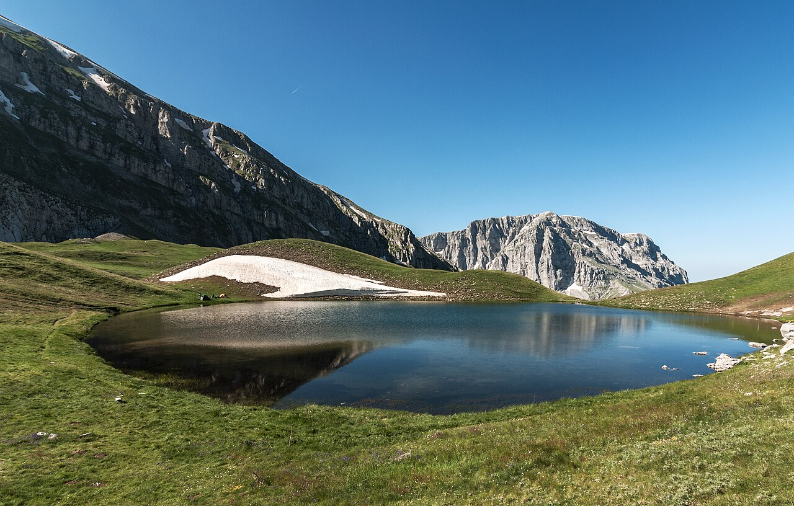

Αλπική λίμνη της Ηπείρου σε υψόμετρο περίπου 2.050 μ. Αποτελεί έναν από τους πιο εντυπωσιακούς φυσικούς προορισμούς της Ελλάδας.
- 🥾 Ιδιαίτερα δημοφιλής προορισμός για πεζοπορία στην οροσειρά της Πίνδου.
- 📷 Προσφέρει μοναδικές ευκαιρίες για Φωτογραφία Αλπικού τοπίου.
- 🌿 Βρίσκεται στην καρδιά της προστατευόμενης περιοχής του Εθνικού Πάρκου Βίκου - Αώου
- ⛰️ Συνδέεται με θρύλους για τις "δρακόλιμνες" που συναντώνται στα βουνά της Ηπείρου.